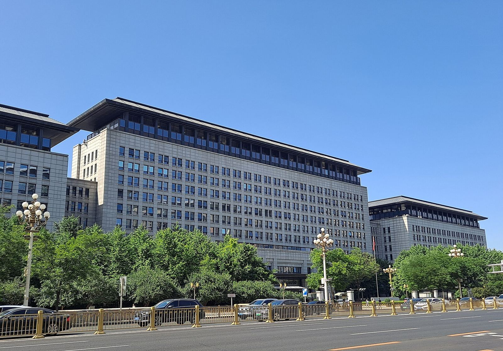
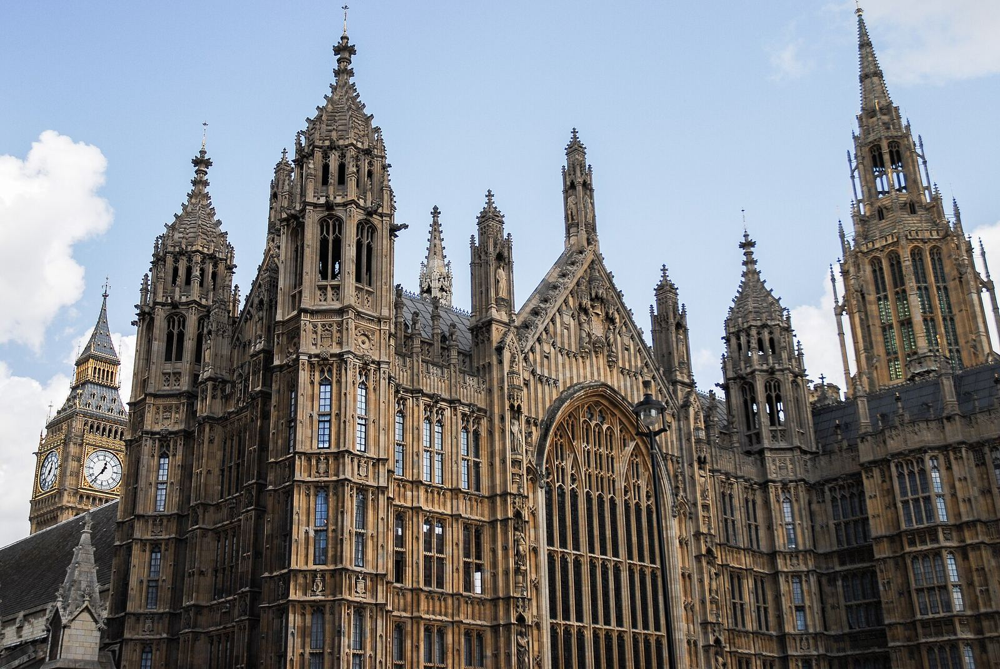
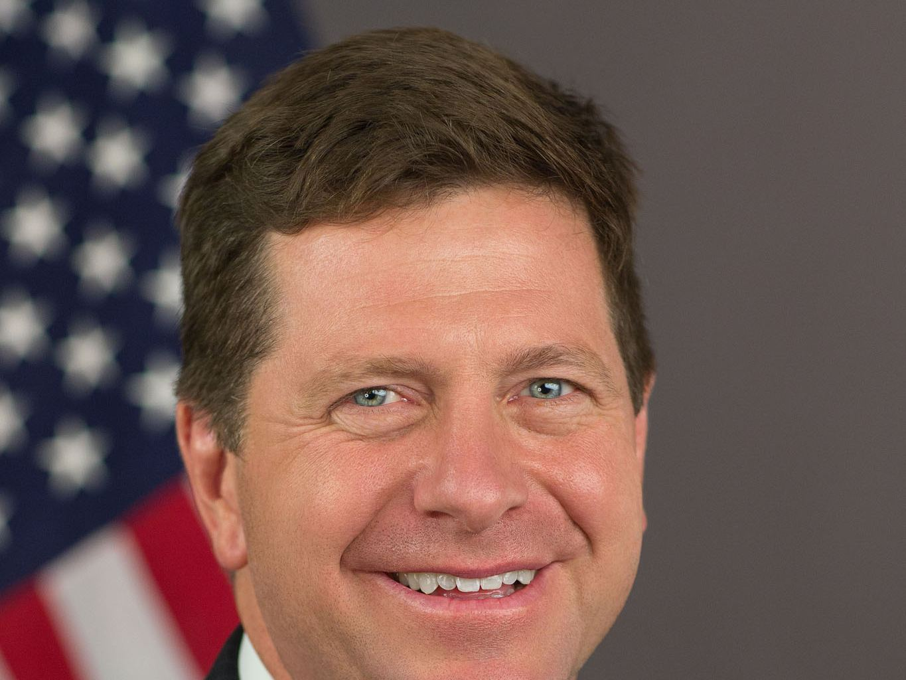

摘记 · 不是官方媒体
2026年10月21日
分类
共 19 篇，按日期从新到旧。
2026-10-19（联邦公报 10 月 20 日刊出） · Federal Register · Politico · Bloomberg
2026-10-17 · TechCrunch · The Verge · Nieman Lab

2026-10-16 · 商务部 · On The Wire · Bloomberg
2026-10-14 · Euronews · TechRepublic
2026-10-14 · Reuters · NBC News · Nebraska AG · Iowa Capital Dispatch
2026-10-14 · Anthropic

2026-10-13 · WIRED · MLex
2026-10-13 · Reuters
2026-10-08 · Anthropic · The Verge
2026-10-06（10-07 更新） · ABC News · The Guardian · news.com.au · The New Daily / AAP
2026-10-05 · The Korea Times · The Korea Herald · Reuters
2026-10-05 · BBC News
2026-10-05 · TechCrunch · The Verge

2026-10-04 · NPR · Anadolu Agency（援引《华尔街日报》）
2026-10-03 · The Straits Times · Al Jazeera
2026-10-02 · Seoul Economic Daily
2026-10-01 · California DOJ · The Hill
2026-09-29 · BBC News
2026-09-29 · CBS News
返回全部分类